이 글은 十月一日，星期三，晴(10월 1일 수요일 맑음)으로 시작하는 일기 형식의 본문이다. 화자는 새 학교(新学校)가 괜찮다(不错)고 말하며, 모두 여덟 과목(一共学八门科目)을 배운다고 소개한다. 과목을 셀 때 쓰는 양사가 门이라는 점이 이 본문의 핵심 문법 포인트다.
여덟 과목은 英语(영어), 中文(중국어), 数学(수학), 物理(물리), 化学(화학), 生物(생물), 美术(미술), 体育(체육)이다. 나열할 때 마지막 항목 앞에만 和를 쓰고 그 앞은 모두 모점(、)으로 잇는다는 점을 같이 봐 두면 좋다.
본문 전체가 비교와 평가를 연습하는 구조다. 对我来说，中文最难(나에게는 중국어가 가장 어렵다), 体育课最容易(체육 수업이 가장 쉽다)처럼 最로 '가장 ~하다'를 말하고, 化学课比英语课有意思(화학 수업이 영어 수업보다 재미있다), 数学比物理难一点儿(수학이 물리보다 조금 더 어렵다)처럼 A 比 B + 형용사로 둘을 비교한다. '조금 더'는 형용사 뒤에 一点儿을 붙여 표현한다.
이유를 대는 표현도 반복해서 나온다. 因为我们常常做实验(우리가 자주 실험을 해서), 因为我喜欢运动(내가 운동을 좋아해서)처럼 因为로 이유를 말하고, 生物老师教得很好，所以我很喜欢生物처럼 所以로 결과를 잇는다. 그리고 동작을 '얼마나 잘하는지' 평가할 때는 得를 쓴다 — 教得很好(잘 가르친다), 学得还可以(그런대로 잘 배운다), 画得不错(잘 그린다)가 모두 같은 형태다.
나머지 문장에는 학교생활 표현이 담겨 있다. 영어 수업은 시험(测验)이 자주 있어서 有点儿累(조금 피곤하다)고 했는데, 여기서 有点儿은 불만이나 부정적인 느낌을 말할 때 쓴다는 점이 一点儿과 다르다. 미술 수업에서는 친구와 반려동물(宠物)을 그려서 很好玩儿(아주 재미있었다)고 했고, 완료를 나타내는 了가 画了에 붙어 있다.
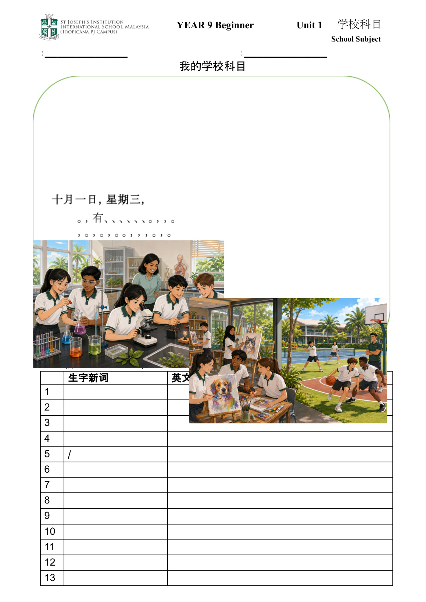
표의 왼쪽 칸 生字新词에는 새로 배운 중국어 낱말을 쓰고, 오른쪽 칸 英文意思에는 그 낱말의 영어 뜻을 쓴다. 이 단원은 学校科目(학교 과목)이 주제이므로 과목 이름 낱말을 채우게 된다.
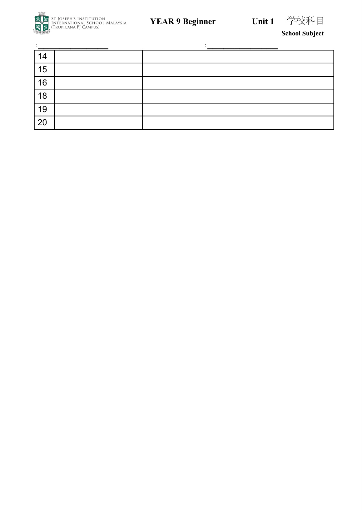
学校科目(xuéxiào kēmù)는 '학교 과목(School Subject)'이라는 뜻이다. 14~20번 칸에는 과목 이름을 중국어로 써 넣는다.
이 자료는 Unit 1 Lesson 1 我的新学校(나의 새 학교) 단원에 딸린 Quizlet 링크 모음이다. 링크는 두 개인데, 하나는 Text 1 카드이고 다른 하나가 지금 보는 Text 2 카드다. 교과서 본문(text)을 두 덩어리로 나눠서, 각 본문에 나오는 단어를 따로 외우게 만들어 둔 것이다.
이 자료는 Unit 1 Lesson 1 我的新学校(나의 새 학교) 단원에서 쓰는 퀴즐렛(Quizlet) 링크 모음이다. 링크가 두 개 걸려 있는데, 하나는 Text 1 플래시카드이고 다른 하나는 Text 2 플래시카드다. 즉 본문 하나당 카드 묶음 하나씩, 두 세트를 따로 외우게 만들어 둔 것이다.
플래시카드(flashcards)는 앞면에 중국어 글자, 뒷면에 뜻이 나오는 낱말 카드다. 링크를 눌러 들어가면 이 단원 본문에 나오는 단어들을 카드로 넘기면서 외울 수 있다. 教材가 종이가 아니라 웹사이트에 있으므로, 링크를 눌러야 실제 공부할 내용이 나온다.
제목에 붙은 Y9는 9학년용이라는 뜻이고, 이 자료는 9월 2일에 올라왔다. 단원 이름 我的新学校는 '나의 새 학교'라는 뜻이라, 학교 안의 장소·과목·사람처럼 학교와 관련된 말이 중심이 될 자리다.
앞부분은 학교 시설 낱말(school facilities)이다. 学校(학교), 教室(교실), 图书馆(도서관), 操场(운동장), 体育馆(체육관), 食堂(식당), 办公室(사무실), 电脑室(컴퓨터실), 实验室(실험실), 游泳池(수영장) 열 개가 그림과 짝지어 나온다. 이 낱말들은 끝 글자에 규칙이 있다. 室은 방(教室·电脑室), 馆은 큰 건물·홀(图书馆·体育馆), 场은 넓은 마당(操场·篮球场), 楼는 여러 층짜리 건물(教学楼·中学楼)이라서, 모르는 낱말이 나와도 끝 글자만 보면 어떤 종류인지 짐작할 수 있다.
가운데는 위치를 말하는 세 동사 在／是／有다. 셋 다 위치를 말하지만 말을 어디서 시작하느냐에 따라 어순이 달라진다. 찾는 물건·장소로 문장을 시작하면 在를 쓴다(사물＋在＋위치): 游泳池在体育馆里面. 위치로 시작해서 '거기가 무엇이다'라고 말하면 是를 쓴다(위치＋是＋사물): 幼儿园的对面是一个公园. 위치로 시작해서 '거기에 무엇이 있다'라고 말하면 有를 쓴다(위치＋有＋사물): 篮球场的旁边有两个网球场. 함께 쓰는 위치 낱말은 里面(안), 外面(밖), 旁边(옆), 对面(맞은편), 附近(근처)다.
뒷부분은 一……就…… 구문이다. 뜻은 '~하자마자 바로 ~한다'이고, 형태는 주어＋一＋동작1＋就＋동작2다. 我一下课就打网球了(수업 끝나자마자 테니스를 쳤다), 她一放学就坐校车回家(하교하자마자 스쿨버스로 집에 간다)처럼 앞 일이 끝나면 곧바로 뒤 일이 일어난다는 뜻이다. 老师一进教室，我们就安静下来처럼 주어가 둘일 때는 一 앞과 就 앞에 각각 주어를 넣는다.
수업에서 하는 활동은 학교 지도를 보고 建物 위치를 직접 말하는 것이다. 한 단계 위(Exceeding)는 건물 네 개를 골라 在·是·有 세 동사를 모두 써서 완전한 문장을 쓰는 것이고, 그 위(Mastering)는 한 장소를 골라 서로 다른 문형 두세 개로 설명하는 것이다. 더 길게 답하고 싶으면 而且(게다가)나 除了……以外(~을 제외하고)를 붙여 두 마디 문장으로 만든다. 이유를 설명할 때는 因为……所以……(~때문에 그래서 ~)를 쓴다.
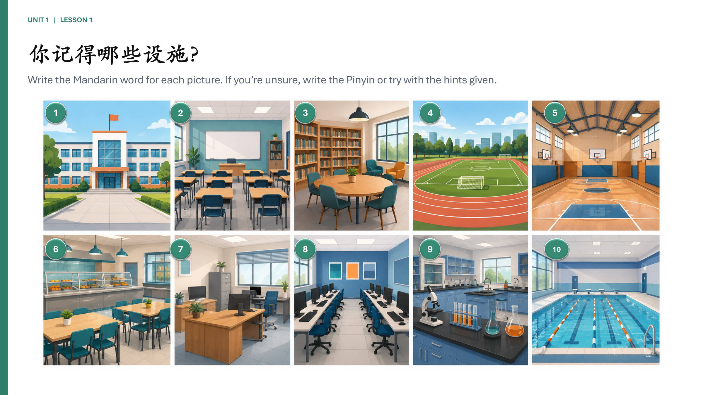
학교 시설(设施) 이름을 그림 보고 떠올려 쓰는 연습 쪽이다.
답이 생각나지 않으면 한자 대신 병음으로 써도 되고, 힌트를 참고해도 된다.
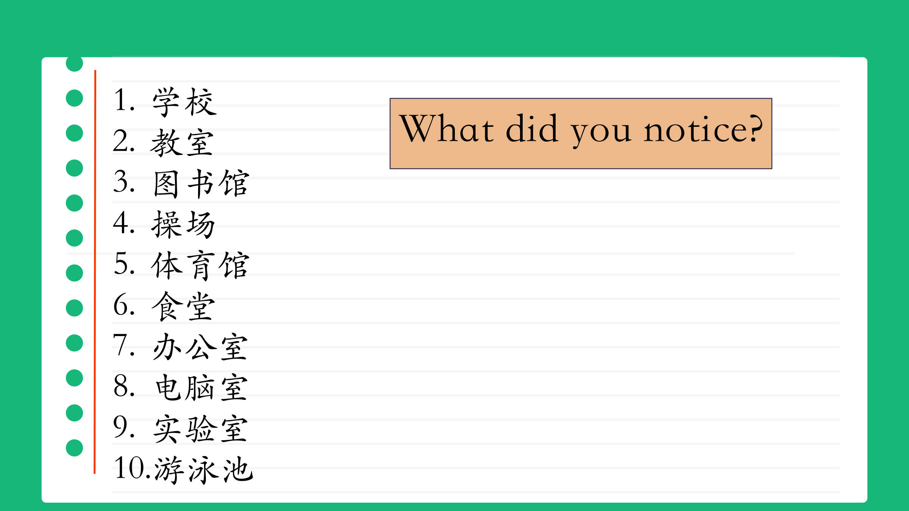
학교 안 장소를 가리키는 낱말 열 개가 나열된 쪽이다.
열 개를 훑어보고 낱말들 사이의 공통점을 스스로 찾아내라는 물음이 끝에 붙어 있다.
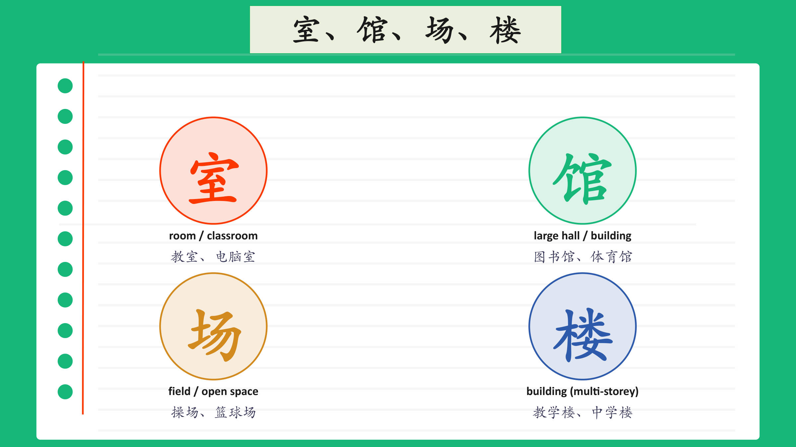
室·馆·场·楼는 모두 낱말 뒤에 붙어 장소를 만드는 글자다. 앞말이 무엇을 하는 곳인지 알려 준다.
네 글자는 공간의 종류가 다르다. 室은 방 한 칸, 馆은 큰 홀이 있는 건물, 场은 지붕 없이 트인 넓은 곳, 楼는 여러 층으로 된 건물이다.
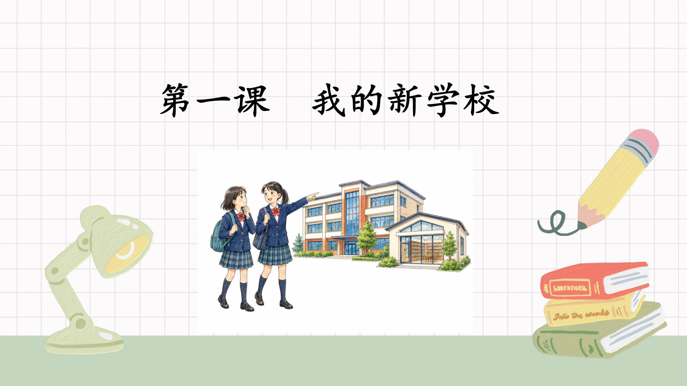
이 쪽은 단원 제목만 있는 표지 쪽이다. 第一课는 '제1과', 我的新学校는 '나의 새 학교'라는 뜻이다.
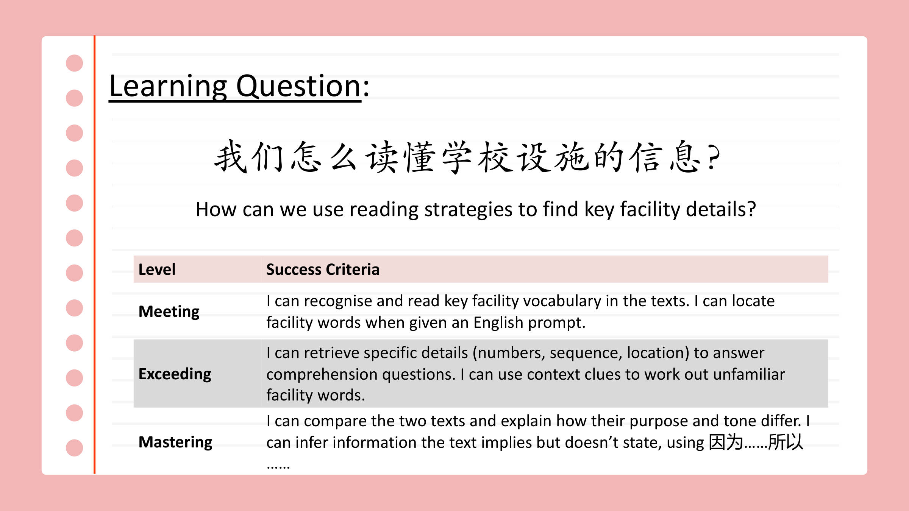
이 쪽은 배울 내용이 아니라 '무엇을 할 수 있어야 하는가'를 정한 목표 쪽이다. 학습 질문 하나와 세 단계 성취 기준으로 되어 있다.
단계가 올라갈수록 요구가 달라진다. 도달은 낱말 알아보기, 우수는 숫자·순서·위치 찾기와 문맥으로 뜻 짐작하기, 최상은 두 글의 목적·어조 비교와 因为……所以……로 추론하기다.
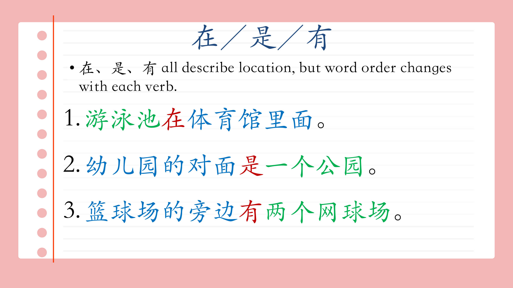
在·是·有 셋 다 위치를 말하지만, 쓰는 동사에 따라 말의 순서가 바뀐다.
在은 '장소+방위사(里面)' 앞에 오고, 是·有는 '장소+방위사(对面·旁边)' 뒤에 온다.
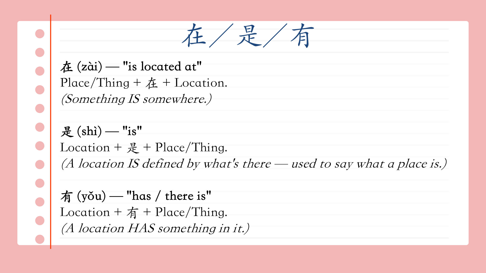
在은 '사물+在+장소' 순서로 무언가가 어디에 있는지 말하고, 是와 有는 반대로 '장소'가 앞에 온다.
같은 장소 문장이라도 是는 그 장소가 무엇인지 규정하고, 有는 그 장소 안에 무엇이 있는지를 말한다.
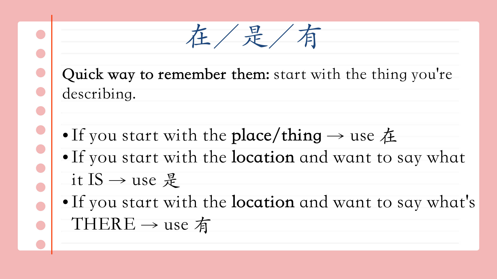
문장을 무엇으로 시작하느냐에 따라 在·是·有가 갈린다.
장소로 시작할 때, '그것이 무엇이다'는 是, '거기에 무엇이 있다'는 有다.
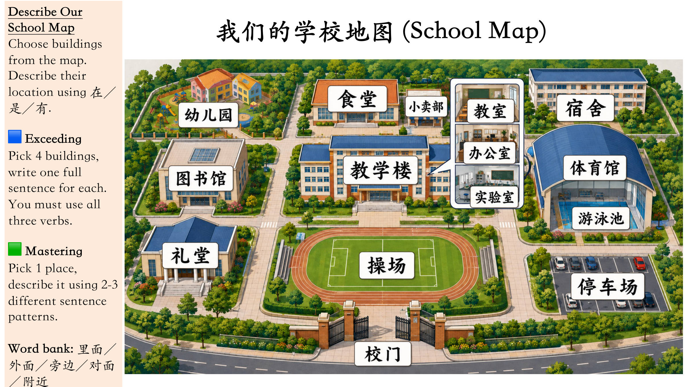
과제 등급이 두 단계다. 기본(Mastering)은 장소 1개를 문형 2~3개로, 심화(Exceeding)는 건물 4개를 완전한 문장으로 쓰고 在·是·有 세 동사를 모두 넣어야 한다.
위치를 나타내는 낱말 창고가 주어져 있다 — 里面(안), 外面(밖), 旁边(옆), 对面(맞은편), 附近(근처).
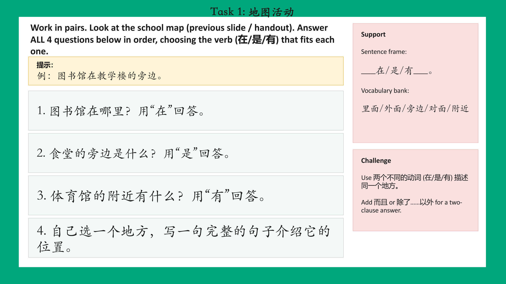
질문마다 쓰는 동사가 정해져 있다 — 1번은 在, 2번은 是, 3번은 有이고, 4번만 스스로 골라 쓴다.
도움(Support)은 문장 틀과 위치 낱말 다섯 개(里面·外面·旁边·对面·附近)를 주고, 도전(Challenge)은 같은 장소를 동사 두 개로 설명하거나 而且·除了……以外로 문장을 잇는 것이다.
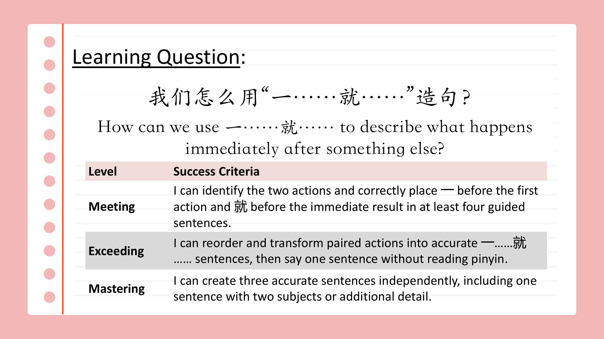
一은 먼저 일어나는 동작 앞에, 就는 바로 뒤따르는 결과 앞에 놓는다.
단계는 도달(안내받아 4문장) → 우수(순서 바꾸기 + 병음 없이 1문장 말하기) → 최상(혼자 3문장, 그중 하나는 주어 2개나 추가 설명)으로 올라간다.
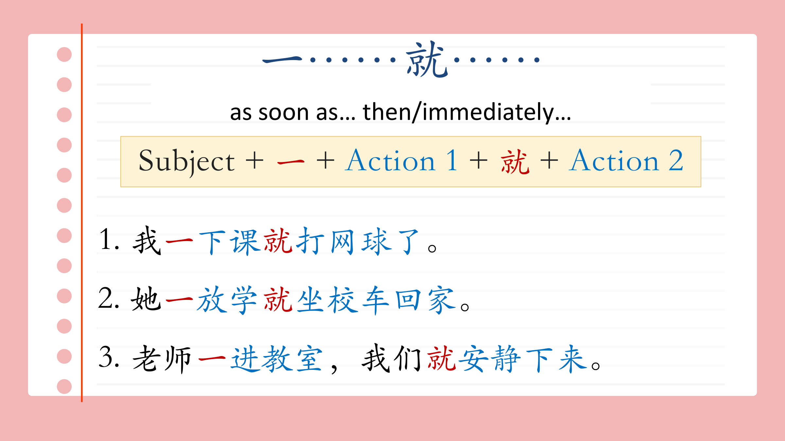
'⼀'와 '就'는 짝으로 쓰며, ⼀ 뒤에 먼저 일어난 동작을, 就 뒤에 바로 이어지는 동작을 넣는다.
세 번째 예문처럼 주어가 둘이면 ⼀는 앞 주어(老师) 뒤에, 就는 뒤 주어(我们) 뒤에 놓는다.
과제 내용
Week 7 활동지에 있는 질문 여섯 개(six questions)에 답하는 1분짜리 중국어 스피치를 쓴다.
주제는 我今年学习的科目(올해 내가 배우는 과목)이다.
쓴 글과 녹음 파일을 둘 다 Google Classroom에 낸다.
점수 구성
쓰기(Writing) 10점과 말하기(Speaking) 10점을 더해 20점 만점이다.
쓰기는 전달력(communication)과 언어(language)를 따로 나누지 않고 한꺼번에 보고 10점 중 하나의 점수를 준다. 이런 방식을 holistic mark(전체를 보고 매기는 점수)라고 한다.
말하기(녹음)도 holistic mark다. 전달력(communication), 언어(language), 발음(pronunciation), 유창성(fluency)을 한꺼번에 보고 10점 중 하나의 점수를 준다.
레벨 상한(level cap)
쓰기와 말하기를 더한 총점에는 레벨별 최고점이 있다.
Meeting은 최고 12점, Exceeding은 최고 16점, Mastering은 최고 20점이다.
총점이 그 레벨의 최고점보다 높으면 최고점으로 깎는다. 예를 들어 Meeting 수준인데 합이 14점이면 12점이 된다.
레벨을 정하는 방법
레벨은 학생이 고른 페이지가 아니라 실제로 쓴 언어로 정한다.
선생님은 글을 읽으면서 레벨표(level table)에 있는 언어 요소(language features) 중 무엇을 썼는지 표시한다.
그래서 Mastering 페이지를 골랐어도 문장이 Meeting 수준이면 Meeting으로 매겨진다.
점수를 매기는 순서
쓰기 점수는 가장 낮은 구간(bottom band)부터 보면서 위로 올라가 가장 잘 맞는 구간을 찾는다.
그 구간 기준을 확실히 충족하면(convincingly meets) 구간의 높은 점수를 주고, 겨우 충족하면(just meets) 낮은 점수를 준다.
녹음을 듣고 말하기 점수도 같은 방식으로 매긴다.
두 점수를 더하고 레벨 상한을 적용한 뒤, 그 레벨에 맞는 WWW·EBI 코멘트를 골라 준다.
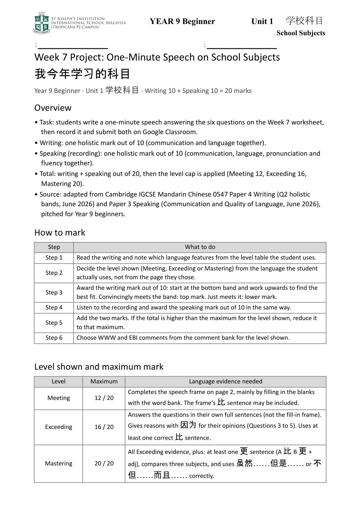
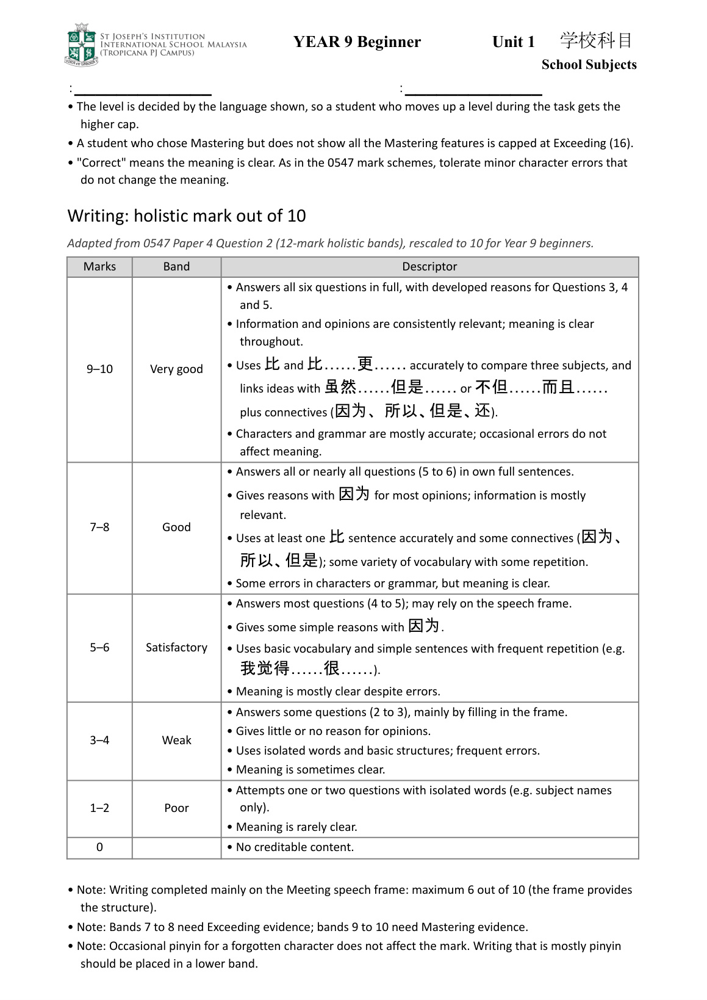
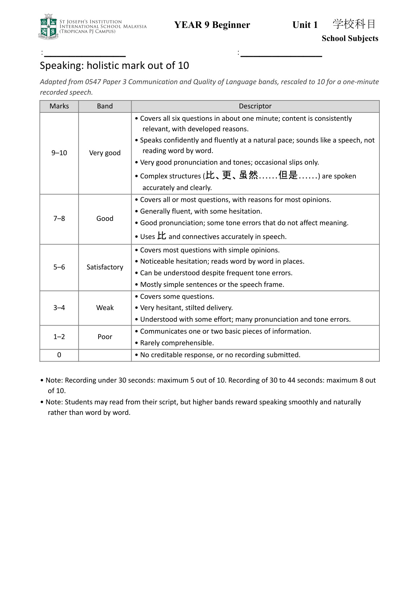
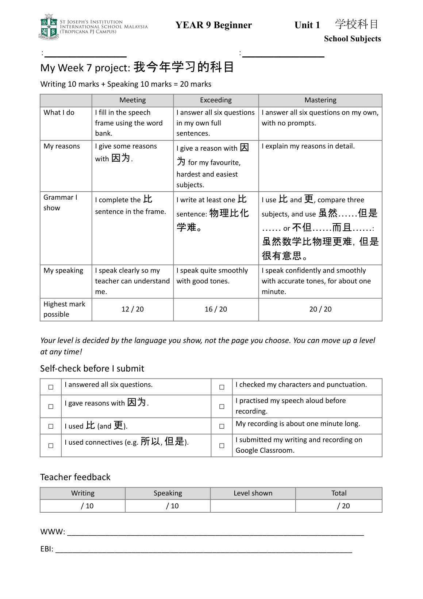
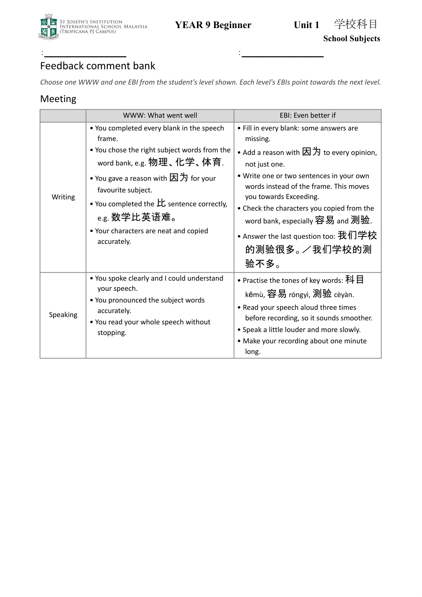
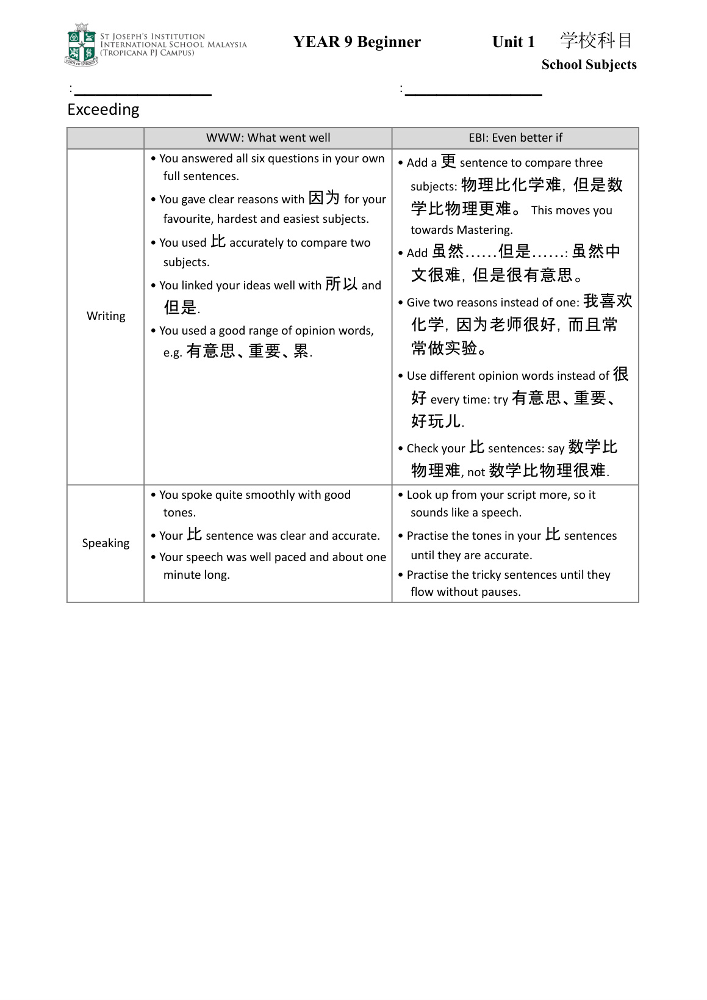
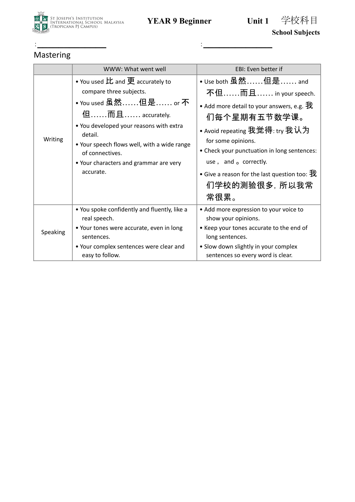
보이는 것 말하기 — 我看到了……
그림을 보고 무엇이 보이는지 말할 때는 我看到了……。(wǒ kàn dào le…, I can see… / I saw…)를 쓴다.
我는 '나', 看到는 '보다(보고 알아차리다)', 了는 이미 본 것을 나타내는 말이다.
뒤에 보이는 물건이나 사람을 넣으면 된다. 예를 들어 我看到了老师。는 '선생님이 보인다', 我看到了书。는 '책이 보인다'는 뜻이다.
보이는 것 세 가지를 쓰려면 이 문장을 세 번 쓰거나 낱말을 이어서 쓰면 된다.
사람·장소·물건 낱말
老师(lǎoshī)는 선생님(teacher), 学生(xuésheng)은 학생(students)이다.
장소 낱말로는 学校(xuéxiào, school), 教室(jiàoshì, classroom), 操场(cāochǎng, school playground)이 있다.
물건 낱말로는 书(shū, books), 桌子(zhuōzi, tables / desks), 椅子(yǐzi, chairs), 足球(zúqiú, football)가 있다.
桌子와 椅子는 둘 다 子로 끝나서 헷갈리기 쉬우니 桌=책상, 椅=의자로 구분해 둔다.
누가 무엇을 하고 있는지 말하기 — 在 + 동작
지금 하고 있는 일을 말할 때는 사람 뒤에 在(zài)를 넣고 그 뒤에 동작을 쓴다. 在는 여기서 '~하고 있다(is doing)'라는 뜻이다.
틀은 学生在……。(The students are…) 또는 老师在……。(The teacher is…)이다.
예를 들어 学生在看书。는 '학생들이 책을 읽고 있다', 老师在写字。는 '선생님이 글씨를 쓰고 있다'는 뜻이다.
동작 낱말
看书(kàn shū)는 책을 읽다(read), 写字(xiě zì)는 글씨를 쓰다(write), 学中文(xué Zhōngwén)은 중국어를 배우다(learn Chinese)이다.
唱歌(chàng gē)는 노래하다(sing), 跳舞(tiào wǔ)는 춤추다(dance)이다.
踢足球(tī zúqiú)는 축구를 하다(play football), 打乒乓球(dǎ pīngpāngqiú)는 탁구를 치다(play table tennis), 看表演(kàn biǎoyǎn)은 공연을 보다(watch a performance)이다.
축구는 발로 차니까 踢(차다), 탁구는 손으로 치니까 打(치다)를 쓴다는 점이 다르다. 看은 '책을 보다'와 '공연을 보다' 양쪽에 다 쓰인다.
어디에 있는지 추측하고 이유 말하기 — 我觉得……，因为……
그림 속 사람들이 어디 있는지 짐작해서 말할 때는 我觉得他们在……，因为……。(I think they are in/at…, because…)를 쓴다.
我觉得(wǒ juéde)는 '내 생각에는(I think)', 他们(tāmen)은 '그들', 因为(yīnwèi)는 '왜냐하면(because)'이다.
여기서 在는 동작이 아니라 '~에 있다'라는 장소의 뜻으로 쓰인다.
이유는 그림 속 단서로 댄다. 예를 들어 我觉得他们在操场上，因为学生在踢足球。는 '학생들이 축구를 하고 있어서 운동장에 있는 것 같다'는 뜻이 된다.
장소 표현과 '어떤 학생은…, 어떤 학생은…'
在教室里(zài jiàoshì li)는 '교실 안에서(in the classroom)', 在操场上(zài cāochǎng shang)은 '운동장에서(on the playground)'이다.
교실은 안쪽 공간이라 里(안), 운동장은 위가 트인 곳이라 上(위)을 붙인다는 차이가 있다.
여러 학생이 서로 다른 일을 할 때는 有的学生……，有的学生……。(Some students…, while others…)를 쓴다.
예를 들어 有的学生唱歌，有的学生跳舞。는 '어떤 학생들은 노래하고, 어떤 학생들은 춤춘다'는 뜻이다.
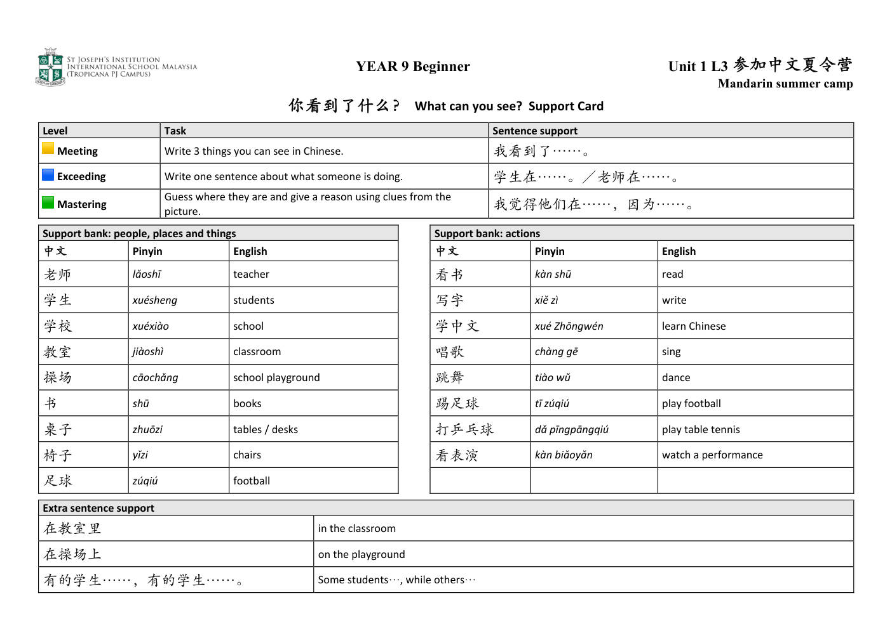
이 카드는 그림을 보고 중국어로 말하는 연습을 세 단계로 나눈다. 기본은 '我看到了……'로 보이는 것을 말하고, 우수는 '在+동작'으로 하는 일을 말하고, 숙달은 '我觉得……，因为……'로 장소를 추측하고 이유를 댄다.
'学生在看书'처럼 사람 뒤에 '在'를 쓰고 동작을 붙이면 '……하고 있다'는 뜻이 된다. 장소를 말할 때는 '在教室里(교실 안에서)', '在操场上(운동장에서)'처럼 '在+장소+里/上'을 쓴다.
'有的学生……，有的学生……'은 '어떤 학생들은 ……하고, 또 어떤 학생들은 ……한다'는 뜻으로, 여러 사람이 서로 다른 일을 할 때 쓴다.
既……又…… 뜻
既……又……(jì……yòu……)는 영어의 both … and …와 같다.
한 대상이 가진 것이나 성질 두 가지를 한 문장에 같이 말할 때 쓴다.
우리말로는 '~도 있고 ~도 있다', '~하기도 하고 ~하기도 하다'에 가깝다.
명사 두 개를 말할 때: 既有……又有……
공식은 (주어) + 既有 + 명사1(Noun 1) + 又有 + 명사2(Noun 2)다.
예: 培训班既有中文课又有文化课。
뜻: 연수반(training class)에는 중국어 수업도 있고 문화 수업도 있다. (The training class has both Chinese lessons and culture lessons.)
여기서 有(yǒu, '있다/가지다')가 꼭 들어가는 이유는 中文课, 文化课가 명사(noun)라서 혼자서는 문장의 서술어가 될 수 없기 때문이다.
그래서 장소에 무엇이 있는지 말할 때는 既 뒤에도, 又 뒤에도 有를 붙인다.
형용사 두 개를 말할 때: 既 + 형용사 + 又 + 형용사
공식은 (주어) + 既 + 형용사1(Adj 1) + 又 + 형용사2(Adj 2)다.
예: 我们的校园既大又美。
뜻: 우리 캠퍼스는 크기도 하고 아름답기도 하다. (Our campus is both big and beautiful.)
大(크다), 美(아름답다) 같은 형용사(adjective)는 중국어에서 그 자체로 서술어 역할을 하므로 有가 필요 없다.
즉 뒤에 오는 말이 명사면 既有……又有……, 형용사면 既……又……로 구분한다.
因为……所以……와 함께 쓰기
既……又……는 이유를 말하는 문장 안에도 넣을 수 있다.
예: 因为体育课既容易又好玩儿，所以我很喜欢。
뜻: 체육 수업은 쉽기도 하고 재미있기도 해서 나는 아주 좋아한다. (Because PE is both easy and fun, I really like it.)
因为(yīnwèi, because) 뒤에 이유를 既……又……로 두 가지 말하고, 所以(suǒyǐ, so) 뒤에 결과를 말하는 구조다.
除此以外，……还…… 뜻
除此以外(chú cǐ yǐwài)는 '이것 말고도', 영어로 besides this라는 뜻이다.
还(hái)는 '또, 게다가(also)'라는 뜻이다.
앞 문장에서 한 가지를 말한 뒤, 다음 문장에서 정보를 하나 더 붙일 때 쓴다.
공식은 문장1。除此以外，(주어) + 还 + 두 번째 명사 또는 동사……다.
还는 반드시 동사(有, 去 등) 바로 앞에 온다.
除此以外 예문
① 我们学校有图书馆。除此以外，还有游泳池。
뜻: 우리 학교에는 도서관이 있다. 이것 말고도 수영장도 있다. (Our school has a library. Besides this, it also has a swimming pool.)
앞 문장과 주어가 같아서 두 번째 문장에서는 주어를 빼고 还有로 바로 이었다.
② 周末学生看京剧。除此以外，他们还去博物馆。
뜻: 주말에 학생들은 경극(Peking opera)을 본다. 이것 말고도 그들은 박물관(museum)에도 간다.
이번에는 주어 他们을 쓰고 그 뒤에 还 + 동사(去)를 놓았다.
두 구조를 이어 쓰기
예: 培训班既有中文课又有文化课。除此以外，学生还有机会逛街。
뜻: 연수반에는 중국어 수업도 있고 문화 수업도 있다. 이것 말고도 학생들은 쇼핑하러 돌아다닐(go shopping) 기회도 있다.
첫 문장에서 既有……又有……로 두 가지를 말하고, 두 번째 문장에서 除此以外，……还……로 세 번째 정보를 더 붙였다.
이렇게 하면 학교나 수업을 소개할 때 정보를 많이 담을 수 있다.
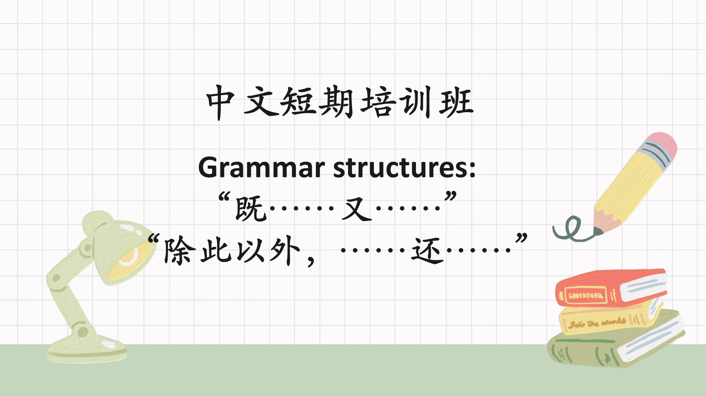
이 쪽은 '중국어 단기 연수반' 단원에서 배울 문법 구조 두 개를 소개한다. 既……又……는 두 가지 성질이나 상황을 함께 말할 때 쓰고, 除此以外，……还……는 앞에서 말한 것에 다른 내용을 덧붙일 때 쓴다.
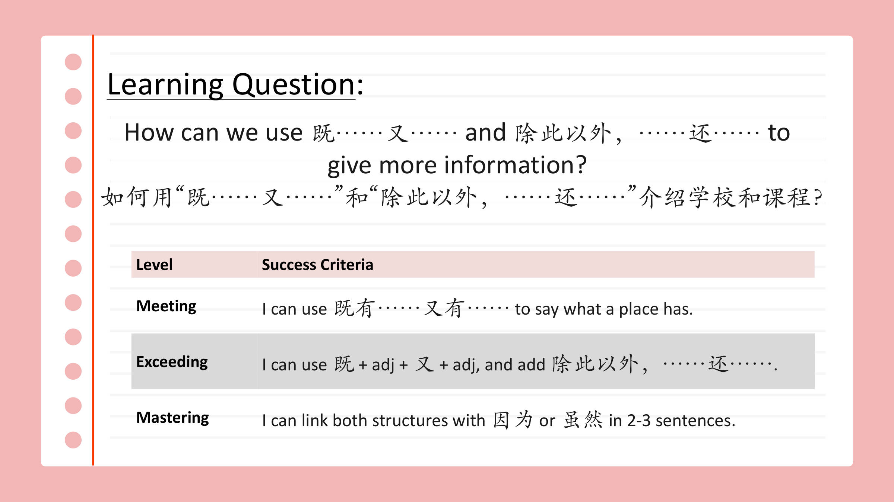
既……又……는 두 가지를 함께 말할 때 쓰는 구조다. 既有……又有……는 장소에 있는 것 두 가지를 말하고, 既 + 형용사 + 又 + 형용사는 성질 두 가지를 함께 말한다.
除此以外，……还……는 '이 밖에도 ~도'라는 뜻으로 정보를 하나 더 보탤 때 쓴다. 가장 높은 단계는 두 구조를 因为(왜냐하면)나 虽然(비록 ~지만)으로 이어 2~3문장으로 말하는 것이다.
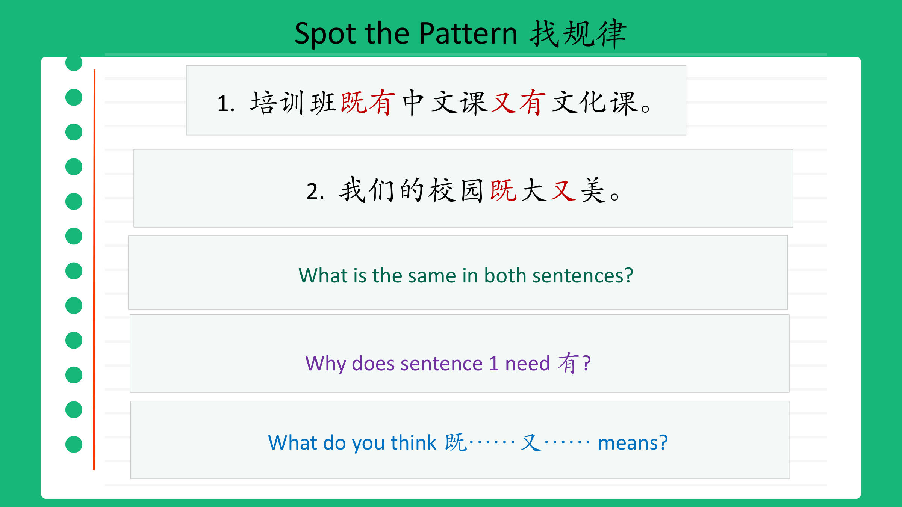
두 문장 모두 既……又……를 써서 두 가지를 함께 말한다. 'A하기도 하고 B하기도 하다'라는 뜻이다.
2번의 大(크다)·美(아름답다)는 형용사라서 既·又 바로 뒤에 온다. 1번의 中文课·文化课는 명사라서 그 앞에 동사 有를 넣어 既有……又有……로 쓴다.
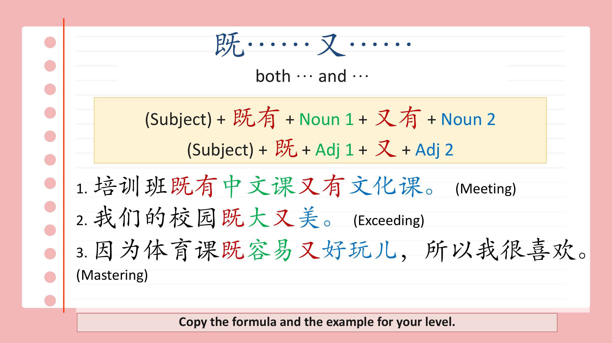
既……又……는 두 가지를 함께 갖추고 있다는 뜻으로, 명사를 이을 때는 既有……又有……를, 형용사를 이을 때는 既……又……를 쓴다.
3번 예문처럼 因为……所以……와 함께 쓰면 '~하기도 하고 ~하기도 해서 …하다'처럼 이유를 말할 수 있다. 예문은 Meeting·Exceeding·Mastering 세 수준으로 나뉘어 있다.
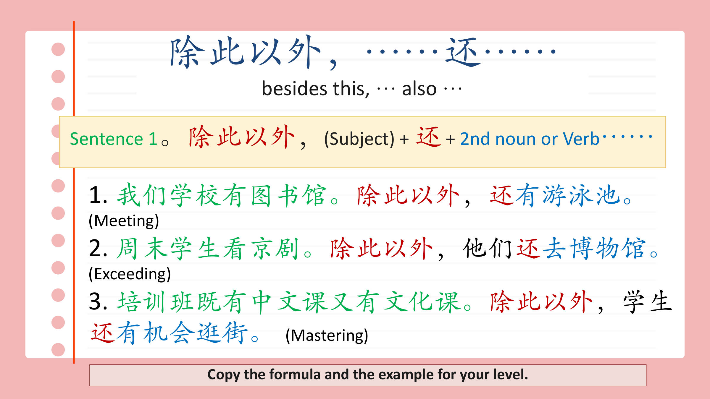
除此以外는 '이것 말고도'라는 뜻으로, 앞 문장을 말한 뒤 새 문장 맨 앞에 쓰고 뒤에 쉼표를 찍는다. 이어지는 말에는 还를 넣어 '또 ~도 있다/한다'를 덧붙인다.
还 뒤에는 명사(还有游泳池)나 동사(还去博物馆)가 온다. 주어가 있으면 他们还去처럼 还를 주어 뒤, 동사 앞에 둔다. 3번 예문의 既有……又有……는 '~도 있고 ~도 있다'라는 뜻이다.
既……又……의 뜻
既……又……는 영어 both … and …와 같은 뜻이다.
두 가지 좋은 점이나 특징을 한 문장에 함께 말할 때 쓴다.
예를 들어 我们的校园既大又美。는 Our campus is both big and beautiful.(우리 캠퍼스는 크고 아름답다)라는 뜻이다.
명사와 쓸 때: 既有……又有……
'무엇이 있다'를 말할 때는 명사(noun)를 쓰고, 이때는 반드시 有를 붙여 既有……又有…… 모양으로 쓴다.
我们学校既有图书馆又有游泳池。는 Our school has both a library and a swimming pool.(우리 학교에는 도서관도 있고 수영장도 있다)이라는 뜻이다.
培训班既有中文课又有文化课。는 The course has both Chinese lessons and culture lessons.이라는 뜻이다.
食堂既有午饭又有零食。(The canteen has both lunch and snacks.), 北京既有名胜古迹又有博物馆。, 学校既有实验室又有电脑室。(The school has both a science lab and a computer room.)도 모두 이 모양이다.
我们的图书馆既有中文书又有英文书。는 Our library has both Chinese books and English books.를 중국어로 옮긴 문장이다.
형용사와 쓸 때: 既……又……, 很은 빼기
'어떠하다'를 말할 때는 형용사(adjective)를 既와 又 바로 뒤에 붙인다.
이때 평소 형용사 앞에 붙이던 很은 사라진다. 자료에서 'Spot the trap: 很 disappears'라고 짚은 함정이 이것이다.
体育课既容易又好玩儿。은 PE is both easy and fun.이라는 뜻이다.
我们的学校既大又方便。(Our school is both big and convenient.), 美术课既有意思又好玩儿。(Art is both interesting and fun.), 北京的博物馆既大又有意思。(Beijing's museums are both big and interesting.)도 같은 모양이다.
博物馆既大又漂亮。(The museum is both big and beautiful.), 纪念品既便宜又好看。(The souvenirs are both cheap and pretty.)도 번역 연습에 나온 문장이다.
정리하면, 명사 앞에는 有를 넣고 형용사 앞에는 很을 넣지 않는다.
除此以外，……还……의 뜻
除此以外는 영어 Besides this(이것 말고도)라는 뜻이다.
앞 문장에서 한 가지를 말하고, 다음 문장 첫머리에 除此以外를 놓아 한 가지를 더 덧붙인다.
뒤 문장에는 还(also, 또)를 함께 쓴다.
学生上午上中文课。除此以外，他们下午还练书法。는 Students have Chinese lessons in the morning. Besides this, they also practise calligraphy in the afternoon.이라는 뜻이다.
周末学生会去看京剧。除此以外，他们还会参观博物馆。는 At the weekend, students will watch Peking opera. Besides this, they will also visit a museum.이라는 뜻이다.
还의 자리
还는 주어 + 还 + 동사 순서로 놓는다. 자료에 'Subject + 还 + verb (他们还……)'라고 나와 있다.
他们还练书法에서처럼 주어 他们 뒤, 동사 练 앞에 온다.
会 같은 조동사가 있으면 还가 그 앞에 와서 他们还会逛街처럼 된다. 学生会参观博物馆。除此以外，他们还会逛街。는 Students will visit museums. Besides this, they will also go shopping.이라는 뜻이다.
있다는 뜻의 문장에서는 주어 없이 还有만 쓸 수도 있다. 我们学校有足球场。除此以外，还有篮球场。은 Our school has a football pitch. Besides this, it also has a basketball court.이라는 뜻이다.
문장 업그레이드: 因为……所以……
因为……所以……는 because … so …, 즉 이유와 결과를 잇는다.
既……又…… 문장을 이유 자리에 넣으면 더 긴 문장이 된다.
因为食堂既有午饭又有零食，所以我每天都去食堂。은 식당에 점심도 간식도 있어서 매일 식당에 간다는 뜻이다.
因为我们的校园既大又美，所以我很喜欢我的学校。도 같은 방식이다.
因为我们的学校很方便，所以我很喜欢我的学校。(Because our school is very convenient, I really like my school.)처럼 既……又…… 없이 한 가지 이유만 쓸 때는 很이 그대로 남는다.
문장 업그레이드: 虽然……但是……
虽然……但是……는 although … but …, 즉 '비록 ~하지만 ~하다'라는 뜻이다.
虽然我不太喜欢运动，但是体育课既容易又好玩儿。은 나는 운동을 별로 좋아하지 않지만 체육 수업은 쉽고 재미있다는 뜻이다.
虽然中文有一点儿难，但是中文课既有意思又好玩儿。은 중국어가 조금 어렵지만 중국어 수업은 흥미롭고 재미있다는 뜻이다.
두 문법 함께 쓰기
既……又……와 除此以外를 이어서 세 가지를 말할 수 있다.
我们学校既有足球场又有游泳池。除此以外，还有篮球场。은 우리 학교에는 축구장도 수영장도 있고, 그 밖에 농구장도 있다는 뜻이다.
我们学校既有足球场又有篮球场。除此以外，还有一个大礼堂。(Besides this, it also has a big hall.)도 같은 방식으로 세 번째 시설을 덧붙인 문장이다.
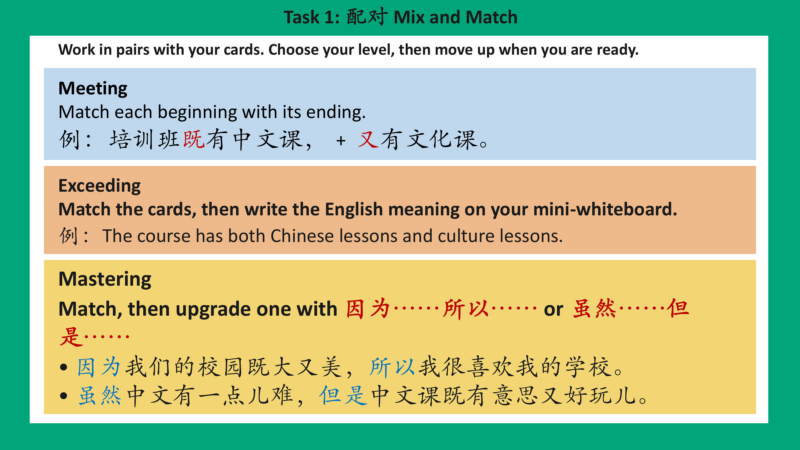
既……又……는 '~하기도 하고 ~하기도 하다'라는 뜻으로, 두 가지를 함께 가지고 있음을 말한다. 既 뒤와 又 뒤에 같은 종류의 말(명사구끼리, 형용사끼리)을 넣는다.
既……又…… 문장은 因为……所以……(원인과 결과)나 虽然……但是……(앞 내용과 반대되는 뒷내용)와 함께 써서 더 긴 문장으로 만들 수 있다.
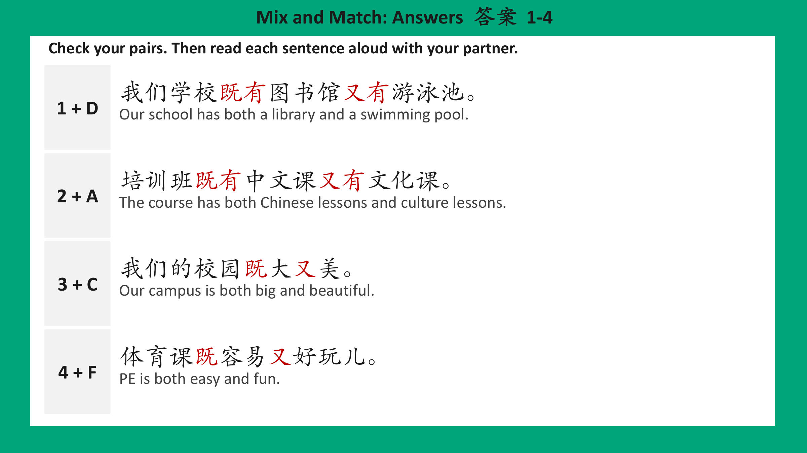
네 문장 모두 '既…又…' 꼴을 쓴다. 'A이기도 하고 B이기도 하다'라는 뜻으로, 두 가지를 함께 갖추었음을 말한다.
1·2번처럼 '既有A又有B'로 쓰면 'A도 있고 B도 있다'는 뜻이 되고, 3·4번처럼 형용사를 넣어 '既大又美', '既容易又好玩儿'로 쓰면 성질 두 가지를 함께 말한다.
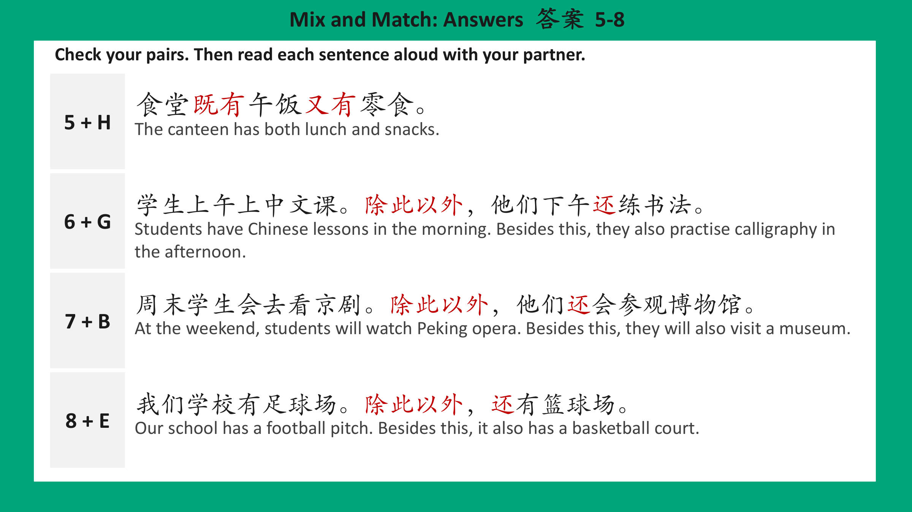
'既A又B'는 'A도 하고 B도 하다'라는 뜻이다. 한 대상이 두 가지를 함께 가지고 있음을 한 문장으로 말할 때 쓴다(예: 食堂既有午饭又有零食).
'除此以外，……还……'는 '이 밖에도 ……도 한다'라는 뜻이다. 앞 문장에서 한 가지를 말한 뒤, 다음 문장 앞에 除此以外를 두고 동사 앞에 还를 넣어 내용을 하나 더 보탠다.
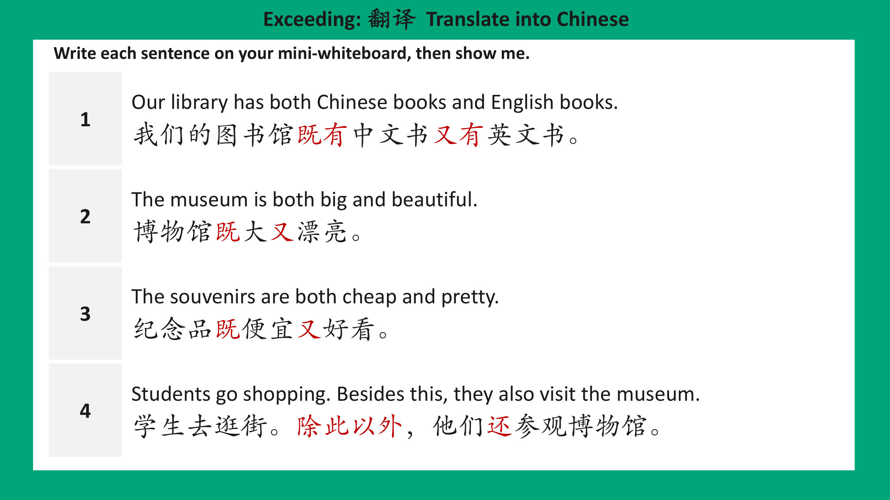
既A又B는 'A하기도 하고 B하기도 하다'라는 뜻이다. 두 가지 성질이나 두 가지 사실을 함께 말할 때 쓴다. 1번처럼 동사(有)를 넣을 수도 있고, 2·3번처럼 형용사(大, 漂亮, 便宜, 好看)를 넣을 수도 있다.
除此以外는 '이것 말고도'라는 뜻이다. 문장 맨 앞에 쓰고 쉼표로 끊는다. 뒤 문장에는 보통 还(또, ~도)를 넣어 더하는 내용을 말한다.
낱말: 图书馆 도서관, 博物馆 박물관, 纪念品 기념품, 便宜 싸다, 好看 예쁘다, 逛街 쇼핑하러 다니다, 参观 둘러보다.
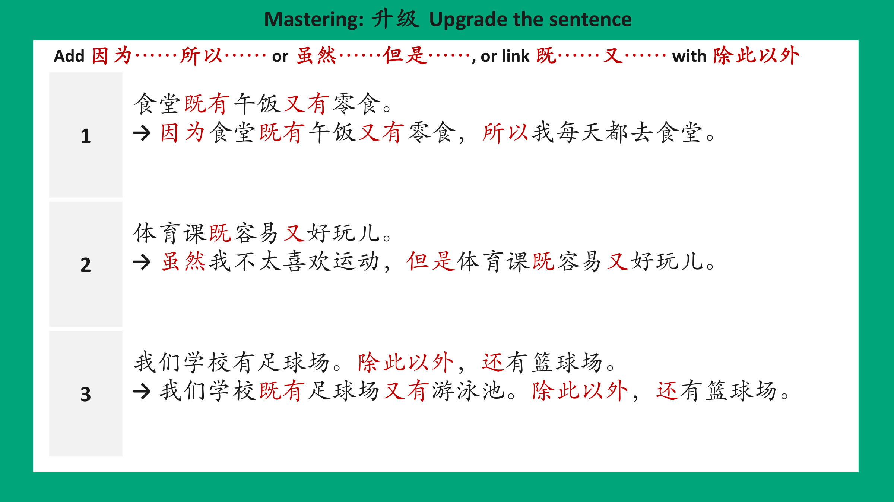
既……又……로 만든 짧은 문장 앞에 因为……所以……(이유와 결과)나 虽然……但是……(반대되는 내용)를 붙이면 더 길고 수준 높은 문장이 된다.
除此以外는 '그 밖에도'라는 뜻으로, 앞 문장에 더할 내용을 이어 준다. 뒤에는 还(또)가 자주 함께 온다(예: 除此以外，还有篮球场).
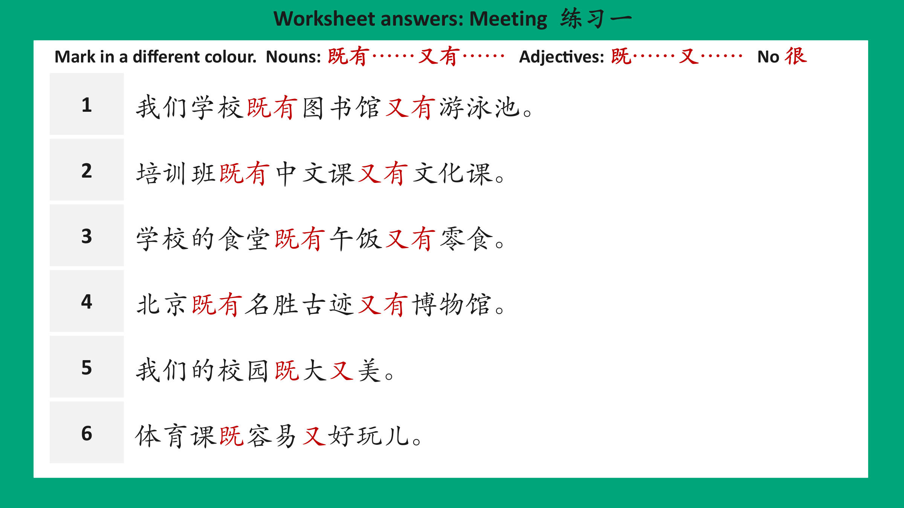
명사 두 개를 함께 말할 때는 '既有+명사+又有+명사'를 쓴다. 1~4번 문장(图书馆·游泳池, 中文课·文化课 등)이 이 경우다.
형용사 두 개를 함께 말할 때는 '既+형용사+又+형용사'를 쓰고, 형용사 앞에 很을 붙이지 않는다. 5번 '既大又美', 6번 '既容易又好玩儿'이 이 경우다.
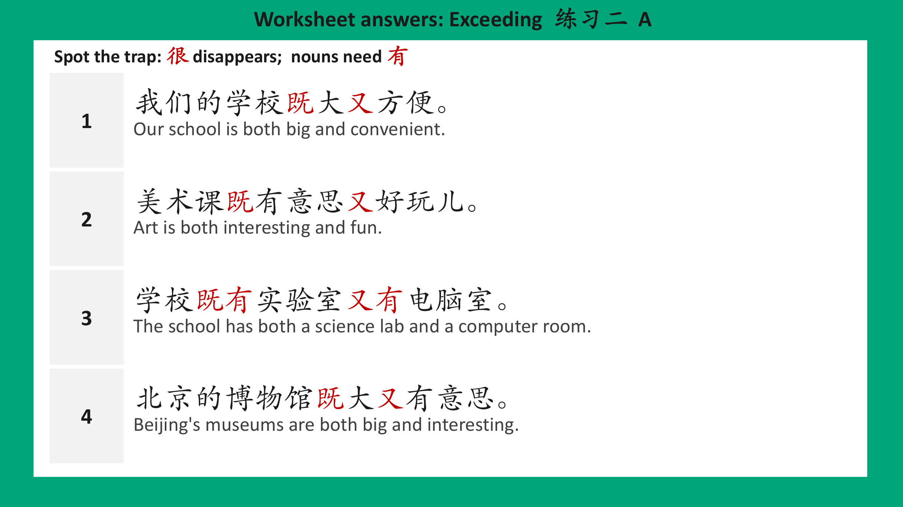
既A又B는 'A하기도 하고 B하기도 하다'라는 뜻으로, 두 가지 성질이나 사실을 함께 말할 때 쓴다. 형용사 앞에 있던 很은 이 구조에 넣으면 빠진다(很大 → 既大又方便).
실험실·컴퓨터실처럼 명사를 넣을 때는 바로 붙이지 않고 有를 함께 써서 '既有A又有B' 꼴로 만든다. 有意思처럼 원래 有가 들어 있는 표현은 그대로 쓴다.
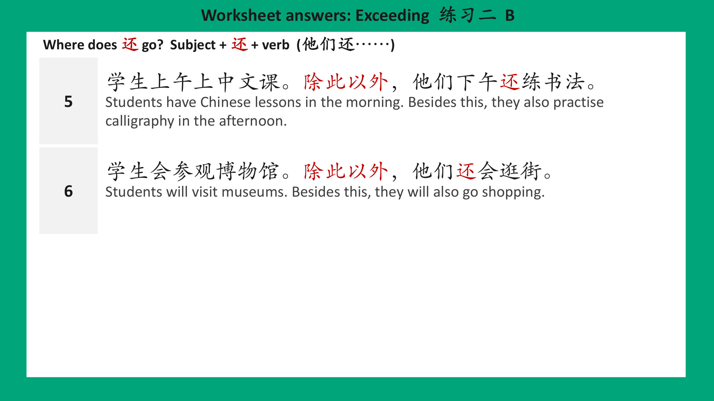
还(~도, 또)는 주어 뒤, 동사 앞에 온다. 예를 들어 他们下午还练书法처럼 시간말(下午)이 있으면 그 뒤에, 他们还会逛街처럼 会가 있으면 会 앞에 놓인다.
除此以外는 '이것 말고도'라는 뜻이다. 앞 문장에 다른 일을 더할 때 쓰고, 뒤 문장에 还가 함께 나온다.
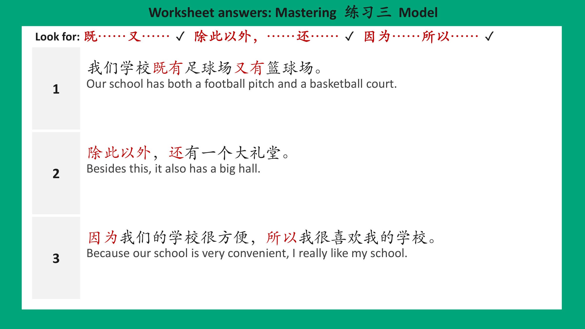
既……又……는 두 가지를 함께 갖추었음을 말할 때 쓰며, 1번 문장에서는 축구장(足球场)과 농구장(篮球场)이 둘 다 있다는 뜻을 나타낸다.
除此以外，……还……는 앞에서 말한 것에 더해 다른 것도 있다고 덧붙일 때 쓰며, 2번 문장에서는 큰 강당(大礼堂)을 덧붙인다.
因为……所以……는 이유와 결과를 이을 때 쓰며, 3번 문장에서는 학교가 편리한(方便) 것이 이유이고 학교를 좋아하는 것이 결과이다.
단원 제목
이 단원의 제목은 中文短期培训班(zhōngwén duǎnqī péixùnbān)이다.
뜻은 '중국어 단기 연수반(short-term Chinese training course)'이다.
제목 낱말 풀이
中文(zhōngwén)은 '중국어(Chinese language)'다.
短期(duǎnqī)는 '짧은 기간, 단기(short-term)'다.
培训班(péixùnbān)은 '연수반, 교육 과정(training class)'이다.
세 낱말을 붙이면 '짧은 기간 동안 중국어를 배우는 과정'이 된다.
단원 제목
이 단원의 제목은 参加中文夏令营(cānjiā Zhōngwén xiàlìngyíng)이다.
뜻은 '중국어 여름캠프에 참가하다(join a Chinese summer camp)'다.
제목 속 낱말
参加(cānjiā)는 '참가하다(to take part in, to join)'라는 뜻이다.
中文(Zhōngwén)은 '중국어(Chinese language)'다.
夏令营(xiàlìngyíng)은 '여름캠프(summer camp)'다. 夏(xià)는 여름(summer), 营(yíng)은 캠프(camp)를 뜻한다.
제목 뜻
我的学校科目(wǒ de xuéxiào kēmù)는 '나의 학교 과목(my school subjects)'이라는 뜻이다.
이번 과는 학교에서 배우는 과목 이름을 중국어로 말하는 내용이다.
제목에 나오는 낱말
我(wǒ)는 '나(I, me)'다.
的(de)는 '~의'라는 뜻으로, 소유를 나타낸다. 그래서 我的(wǒ de)는 '나의(my)'가 된다.
学校(xuéxiào)는 '학교(school)'다.
科目(kēmù)는 '과목(subject)'이다.
이 평가는 Term 1 Common Assessment 1이고, 시험 날짜는 2026년 9월 28일(월)이다. 전체 성적에서 25%를 차지한다고 적혀 있다. 평가하는 영역은 오직 읽기(Reading) 하나다.
범위는 Unit 1의 두 과다. Lesson 1 《我的新学校》(내 새 학교)와 Lesson 2 《我的学校科目》(내 학교 과목)이다. 문제 형식은 세 가지로 적혀 있다 — 핵심 단어로 빈칸 채우기, 독해 지문 문제, 그림 보고 이해하기다.
채점 기준을 보면 무엇을 볼지가 분명하다. 학교 시설(学校设施), 방향·위치, 학교 과목(学校科目)에 관한 단어를 지문 안에서 정확히 찾아 해석할 수 있어야 한다. 또 지문 전체 뜻과 세부 정보를 함께 잡아내는 능력을 본다.
문법은 세 덩어리가 지목돼 있다. 첫째 위치 표현: 在…旁边/左边/右边/后面/对面/里面(~옆/왼쪽/오른쪽/뒤/맞은편/안). 둘째 위치를 말하는 在·是·有 문형이다. 예시로 游泳池在体育馆里面(수영장은 체육관 안에 있다), 幼儿园的对面是一个公园(유치원 맞은편은 공원이다), 篮球场的旁边有两个网球场(농구장 옆에 테니스장이 두 개 있다)이 나와 있다. 셋째는 비교를 나타내는 比다.
복습 방법으로 세 가지를 권하고 있다. Quizlet, 중국어 폴더에 있는 지문(texts), 그리고 문법 노트나 Google Classroom에 있는 문법 자료다.
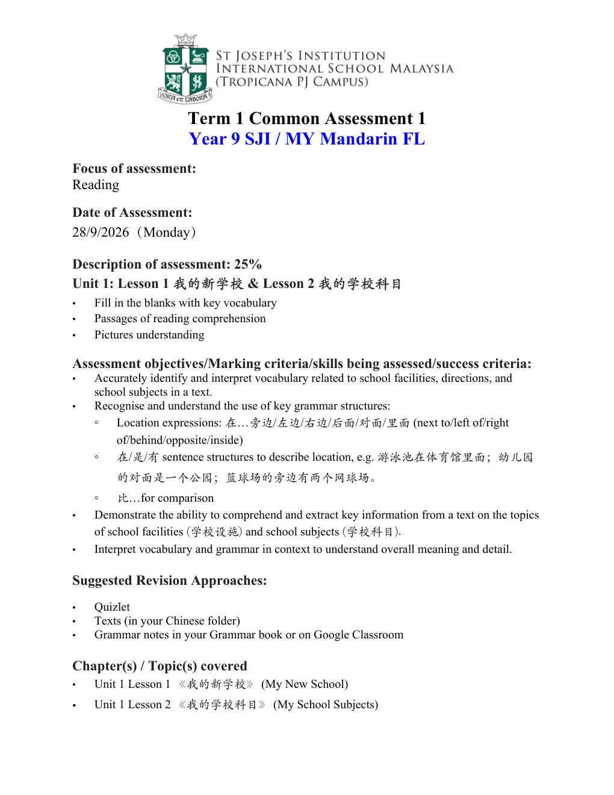
시험은 2026년 9월 28일 월요일, 읽기 영역이고 전체의 25%를 차지한다.
범위는 Unit 1 Lesson 1·2뿐이며, 학교 시설·방향·학교 과목 어휘가 핵심이다.
문법은 세 가지만 나온다 — 위치 표현(旁边/左边/右边/后面/对面/里面), 在/是/有 문장 구조, 비교의 比.
복습은 Quizlet, 중국어 폴더의 지문, 문법 공책이나 Google Classroom의 문법 노트로 한다.
무엇을 외우나
Languages Week(10월 19~23일) 중 10월 21일 수요일에 Class Bee(낱말 맞히기 대회)가 열린다.
준비할 것은 학교생활과 관련된 중국어 낱말 10개다.
낱말마다 한자(Chinese characters), 병음(pinyin), 영어 뜻 세 가지를 함께 익혀야 한다.
학교 안의 장소(places in school)
体育馆 tǐyùguǎn은 체육관이다. 영어로 gym / sports hall이다.
图书馆 túshūguǎn은 도서관이다. 영어로 library다.
教室 jiàoshì는 교실이다. 영어로 classroom이다.
食堂 shítáng은 학교 식당이다. 영어로 canteen이다.
体育馆과 图书馆은 둘 다 끝 글자가 馆 guǎn이다. 馆은 '건물·관(館)'을 뜻하는 글자라서 한국어 '체육관', '도서관'의 '관'과 같다고 생각하면 외우기 쉽다.
과목(school subjects)
科目 kēmù는 과목이다. 영어로 school subject다.
数学 shùxué는 수학이다. 영어로 maths다.
汉语 hànyǔ는 중국어다. 영어로 Chinese (language)다.
数学의 学 xué는 '배우다'라는 뜻이고, 汉语의 语 yǔ는 '말·언어'라는 뜻이다.
과목을 설명하는 말(describing words)
有意思 yǒuyìsi는 '재미있다'는 뜻이다. 영어로 interesting이다. 마지막 si는 성조 표시가 없는 경성(neutral tone)이라 짧고 가볍게 읽는다.
容易 róngyì는 '쉽다'는 뜻이다. 영어로 easy다.
难 nán은 '어렵다'는 뜻이다. 영어로 difficult다.
容易와 难은 서로 반대말이라 짝으로 묶어 외우면 좋다.
병음과 성조(pinyin and tones)
병음 위의 표시는 성조(tone)다. ā는 1성(높고 평평하게), á는 2성(올라가게), ǎ는 3성(내려갔다 올라가게), à는 4성(뚝 떨어지게)이다.
예를 들어 tǐ는 3성, yù는 4성, guǎn은 3성이다.
같은 글자도 성조가 틀리면 다른 말이 되므로 낱말을 외울 때 성조까지 함께 외워야 한다.
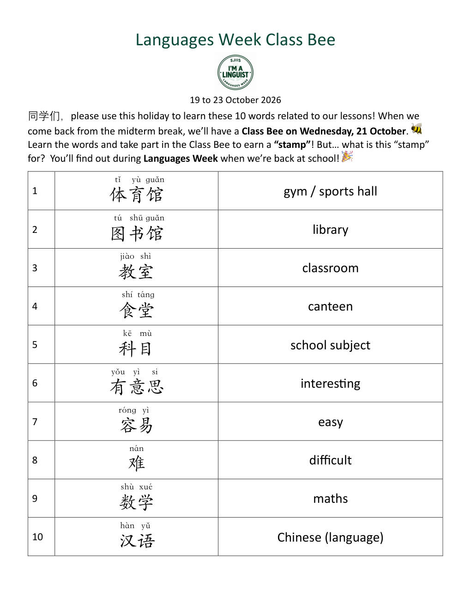
단어 대회는 중간 방학이 끝난 뒤 10월 21일 수요일에 열리고, 참가하면 도장을 받는다.
외울 단어는 10개다. 장소를 가리키는 말은 体育馆(체육관), 图书馆(도서관), 教室(교실), 食堂(학교 식당)이다. 과목을 가리키는 말은 科目(과목), 数学(수학), 汉语(중국어)이다. 느낌을 나타내는 말은 有意思(재미있다), 容易(쉽다), 难(어렵다)이다.
体育馆과 图书馆은 둘 다 馆(guǎn)으로 끝난다. 馆이 건물이나 시설을 뜻하는 글자이기 때문이다.
有意思의 思는 가볍게 읽는 소리라 성조 없이 si로 적는다.
T1 CA2 template - Writing Assessment
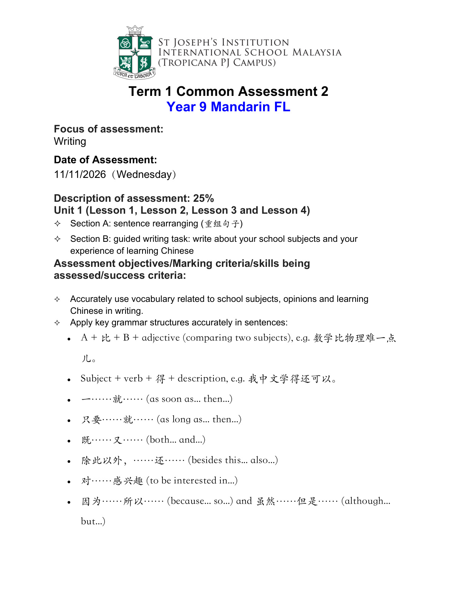
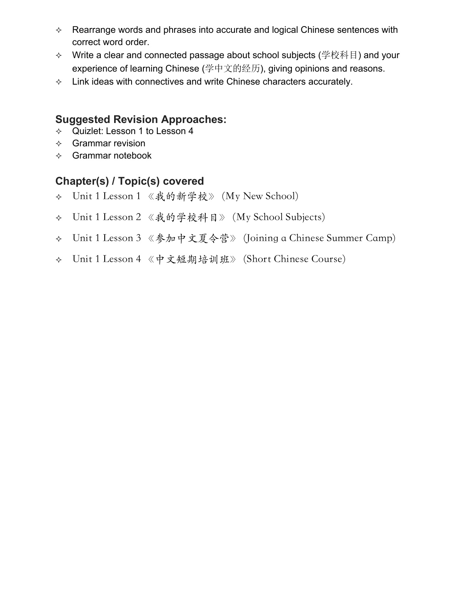
CA2 쓰기 평가 구성
평가는 11월 11일 수요일, 50분, 총 30점이다.
练习一(Exercise 1)은 문장 5개의 순서를 바로잡고 영어 뜻(English meaning)을 쓰는 문제이며 10점이다.
练习二(Exercise 2)는 我的中文夏令营(나의 중국어 여름캠프)라는 제목으로 다섯 질문에 모두 답하는 글쓰기이며 20점이다. 길이는 120~150자(characters)이고 의견(opinion)을 넣어야 한다.
보조 자료인 support sheet를 쓰면 전체 만점이 18/30으로 줄어든다. 그래서 이 노트 내용을 외워 support sheet 없이 쓰는 것이 목표다.
比 비교 문장(comparison)
공식은 A + 比 + B + 형용사다. 'A가 B보다 ~하다'라는 뜻이다.
예: 历史比地理容易。(역사는 지리보다 쉽다.)
가장 중요한 규칙은 比 문장에 很을 넣지 않는 것이다. 数学比英语很难。은 틀리고 数学比英语难。이 맞다.
既……又…… (~하기도 하고 ~하기도 하다, both…and…)
형용사 두 개를 이을 때는 주어 + 既 + 형용사 + 又 + 형용사로 쓴다. 예: 图书馆既大又安静。(도서관은 크기도 하고 조용하기도 하다.)
명사 두 개를 이을 때는 주어 + 既有 + 명사 + 又有 + 명사로 쓴다. 예: 夏令营既有语言课，又有文化课。(캠프에는 언어 수업도 있고 문화 수업도 있다.)
既나 又 뒤에도 很을 넣지 않는다. 体育馆既很大又很新。은 틀리고 体育馆既大又新。이 맞다.
得 정도보어 (how well / how something is done)
공식은 동사 + 得 + 很 + 형용사다. 예: 我们的音乐老师唱得很好听。(우리 음악 선생님은 노래를 아주 듣기 좋게 부른다.)
동사 뒤에 목적어가 있으면 동사 + 목적어 + 동사 반복 + 得 + 很 + 형용사로 쓴다. 예: 我妹妹跳舞跳得很好。(내 여동생은 춤을 아주 잘 춘다.)
得는 반드시 동사 바로 뒤에 와야 한다. 他游泳得很快。는 틀리고, 游泳에서 동사 游를 한 번 더 써서 他游泳游得很快。라고 해야 맞다.
一……就…… (~하자마자 ~하다, as soon as)
공식은 주어 + 一 + 행동1 + 就 + 행동2다. 예: 我一到学校就去图书馆。(나는 학교에 도착하자마자 도서관에 간다.)
一는 첫 번째 행동 앞에, 就는 두 번째 행동 앞에 온다. 我们就一放学去操场。은 순서가 틀렸고 我们一放学就去操场。이 맞다.
只要……就…… (~하기만 하면 ~하다, as long as)
공식은 只要 + 조건, (주어) + 就 + 결과다. 예: 只要多听多说，口语就会提高。(많이 듣고 많이 말하기만 하면 말하기 실력이 늘 것이다.)
뒷부분의 就를 빠뜨리기 쉽다. 只要天气好，我们去踢足球。는 틀리고 只要天气好，我们就去踢足球。가 맞다.
除此以外，……还…… (그 밖에도 ~도 했다, besides / in addition)
공식은 문장1。除此以外，주어 + 还 + 추가 내용이다. 예: 我们参观了博物馆。除此以外，我们还逛街了。(우리는 박물관을 견학했다. 그 밖에도 쇼핑도 했다.)
除此以外를 쓰면 뒤에 반드시 还가 있어야 한다. 除此以外，我们去了博物馆。는 틀리고 除此以外，我们还去了博物馆。가 맞다.
对……感兴趣 (~에 관심이 있다, be interested in)
공식은 주어 + 对 + 대상 + (很/最) 感兴趣다. 예: 我对武术最感兴趣。(나는 무술에 가장 관심이 있다.)
对 + 대상이 感兴趣 앞에 와야 한다. 我感兴趣对书法。는 틀리고 我对书法感兴趣。(나는 서예에 관심이 있다)가 맞다.
시간어 위치(time words)
시간을 나타내는 말은 동사 앞에 둔다. 영어처럼 문장 끝에 두면 틀린다.
我参加了夏令营今年七月。는 틀리고 今年七月，我参加了夏令营。(올해 7월에 나는 여름캠프에 참가했다.)이 맞다.
다섯 질문과 답할 내용
각 질문은 두 가지를 묻는 경우가 많아서 두 부분을 모두 답해야 한다.
1번 你参加了哪儿的中文夏令营？你是什么时候去的？는 어디(where)와 언제(when)를 묻는다. 예: 去年八月，我参加了上海的中文夏令营。(작년 8월에 상하이의 중국어 캠프에 참가했다.)
2번 夏令营有什么课？는 어떤 수업(what lessons)이 있었는지 묻는다. 예: 夏令营既有语言课，又有文化课。
3번 你在夏令营学了什么？做了什么？는 배운 것(what you learnt)과 한 것(what you did)을 묻는다. 예: 我学了武术。周末我们参观了博物馆。(무술을 배웠다. 주말에는 박물관을 견학했다.)
4번 你觉得学中文难吗？为什么？는 의견 + 이유(opinion + reason)를 묻는다. 예: 我觉得中文比英语难，因为汉字很多。(중국어가 영어보다 어렵다고 생각한다, 한자가 많기 때문이다.)
5번 回来以后，你还会继续学习中文吗？为什么？는 예/아니오 + 이유(yes/no + reason)를 묻는다. 예: 我会继续学习中文，因为我希望去中国。(중국어를 계속 배울 것이다, 중국에 가고 싶기 때문이다.)
모범 글(Model Essay, 149자)
[Q1] 去年八月，我和同学参加了上海的中文夏令营。작년 8월 친구와 상하이 중국어 캠프에 참가했다는 내용으로 시간이 동사 앞에 왔다.
[Q2] 夏令营既有语言课，又有文化课。既有……又有……로 수업 종류를 말했다.
[Q3] 오전에는 듣기·말하기를 연습하고 오후에는 무술을 배웠다. 我对武术最感兴趣(对……感兴趣), 老师说我练得不错(得, 선생님이 잘한다고 하셨다), 周末我们一吃完早饭就去游览名胜古迹(一……就……, 주말에 아침을 먹자마자 명승고적을 구경하러 갔다), 除此以外，我们还看了京剧表演(除此以外……还……, 경극 공연도 봤다)까지 문형을 여러 개 넣었다.
[Q4] 我觉得中文比英语难，因为汉字很多，但是只要多听多说，口语就会提高。比, 因为, 但是, 只要……就……로 의견과 이유를 말했다.
[Q5] 回来以后，我会继续学习中文，因为我希望明年还有机会去中国。내년에도 중국에 갈 기회가 있기를 바라서 계속 배우겠다고 이유와 함께 답했다.
채점 기준(Mark Scheme, 练习二 20점)
A 内容 Content (8점): 7~8점은 다섯 질문 모두에 관련된 세부 내용으로 답하고 이유가 있는 의견을 낸 경우다. 5~6점은 전부 또는 대부분 답하고 의견이 하나 이상인 경우다. 3~4점은 일부만 답하고 세부가 적은 경우, 1~2점은 관련 내용이 거의 없는 경우다.
B 语言 Range of language (6점): 5~6점은 이번 학기 문형(一……就……, 只要……就……, 既……又……, 比, 得, 除此以外……还……, 对……感兴趣) 중 세 개 이상을 바르게 쓰고 주제 낱말과 연결어를 다양하게 쓴 경우다. 3~4점은 문형을 한두 개 쓰고 因为·所以·但是 같은 연결어를 어느 정도 쓴 경우다. 1~2점은 주로 짧고 단순한 문장인 경우다.
C 准确 Accuracy (6점): 5~6점은 한자·어순·문법 실수가 거의 없고 뜻이 늘 분명한 경우다. 3~4점은 실수가 있지만 대체로 뜻이 통하는 경우, 1~2점은 실수가 잦아 뜻이 흐려지는 경우다.
길이 제한(Length): 120자보다 짧으면 Content 점수가 최대 5점, 80자보다 짧으면 최대 3점으로 묶인다.
Support sheet를 쓰면 练习二는 13점 만점, 전체는 18점 만점이 된다.
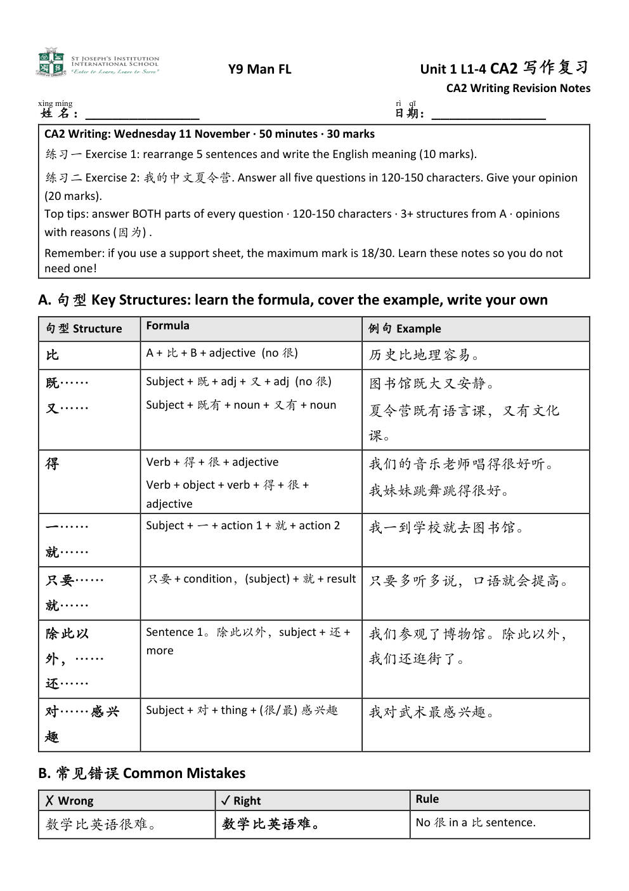
시험은 11월 11일 수요일 50분, 30점 만점이다. 연습 1은 문장 5개 배열과 영어 뜻 쓰기(10점)이고, 연습 2는 '나의 중국어 여름캠프' 다섯 질문에 120~150자로 답하는 글쓰기(20점)이다.
도움 자료를 쓰면 최고 18점까지만 받으므로 문형을 외워 가야 한다. 질문의 두 부분에 모두 답하고, A의 문형을 3개 이상 쓰고, 의견에는 因为로 이유를 붙인다.
比와 既……又…… 문장에는 형용사 앞에 很을 붙이지 않는다. 반대로 得 문장은 동사 + 得 + 很 + 형용사 꼴로 很을 넣는다.
목적어가 있으면 得 앞에서 동사를 한 번 더 쓴다(跳舞跳得很好). 一……就……는 '~하자마자 ~한다', 只要……就……는 '~하기만 하면 ~한다'는 뜻이다.
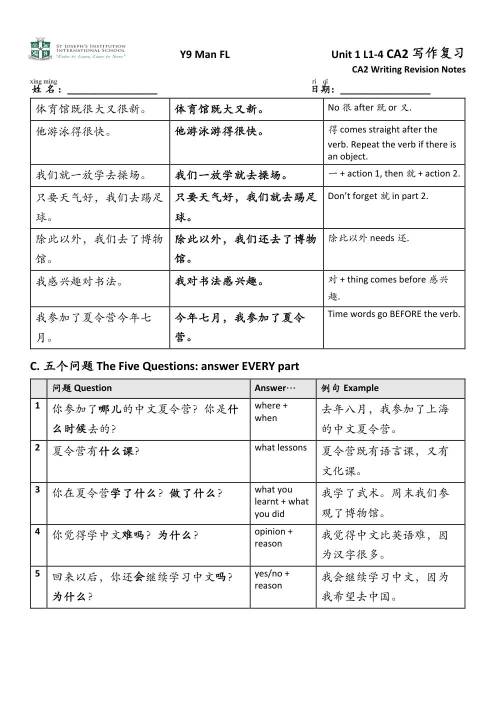
이 쪽은 쓰기에서 자주 틀리는 문형 일곱 가지를 바로잡는다. 既…又… 뒤에는 很을 쓰지 않는다. 得는 동사 바로 뒤에 오고 목적어가 있으면 동사를 한 번 더 쓴다. 一…就…, 只要…就…, 除此以外…还…는 짝으로 쓴다. 对 + 대상은 感兴趣 앞에, 시간 낱말은 동사 앞에 온다.
다섯 가지 질문에는 묻는 부분을 빠짐없이 답해야 한다. 1번은 어디와 언제, 2번은 어떤 수업, 3번은 배운 것과 한 것, 4번은 의견과 이유, 5번은 예/아니오와 이유를 쓴다.
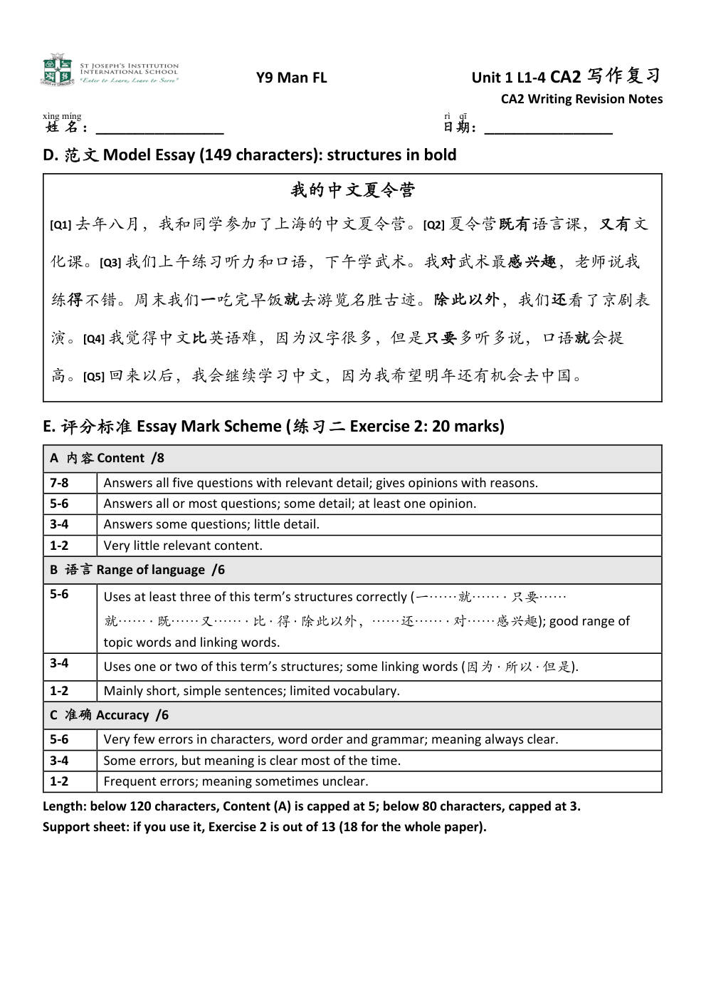
모범글은 다섯 질문 [Q1]~[Q5]에 순서대로 답한다. 언제 어디에 갔는지, 어떤 수업이 있었는지, 무엇을 했는지, 생각과 이유, 앞으로의 계획 순서다.
언어 점수 5~6점을 받으려면 이번 학기 문형 7개 중 세 개 이상을 바르게 써야 한다. 一……就……(~하자마자 ~하다), 只要……就……(~하기만 하면 ~하다), 既……又……(~하기도 하고 ~하기도 하다), 比(~보다), 得(동작이 어떠한지 나타냄), 除此以外，……还……(그 밖에도 ~하다), 对……感兴趣(~에 관심이 있다)다.
내용 점수 7~8점을 받으려면 다섯 질문에 모두 답하고 의견에 이유(因为)를 붙여야 한다.
글은 120자 이상 써야 한다. 120자보다 적으면 내용 점수가 최대 5점, 80자보다 적으면 최대 3점이다.
도움 자료를 쓰면 연습 2 만점이 20점에서 13점으로 줄어든다.
중국어(Mandarin)
이 자료는 9학년(Y9) 중국어 수업에서 배운 내용을 다시 정리하고 복습하기 위한 것이다.
지금 받은 정보는 자료 제목뿐이라, 어떤 단원·낱말·문법을 다루는지는 확인되지 않는다.
The sentence means “We study eight subjects in total.” 门 is the measure word (classifier) used for counting school subjects, so it comes between the number 八 and the noun 科目.
The eight subjects are English (英语), Chinese (中文), Maths (数学), Physics (物理), Chemistry (化学), Biology (生物), Art (美术) and PE (体育). In the Chinese list, the items are joined with the enumeration comma (、), and 和 is used only before the last item.
The first sentence means “Chemistry lessons are more interesting than English lessons.” The second means “Maths is a little harder than Physics.” The pattern is A 比 B + adjective, and 一点儿 is placed after the adjective to mean “a little more”.
有点儿 comes before an adjective and expresses a complaint or a negative feeling, e.g. English lessons have frequent tests (测验), so the writer feels 有点儿累 (a bit tired). 一点儿 comes after the adjective in a comparison to mean “a little more”, e.g. 数学比物理难一点儿 (Maths is a little harder than Physics).
得 is used to evaluate how well an action is done. The structure is verb + 得 + description, for example 教得很好 means “teaches very well”. Likewise, 学得还可以 means “learns fairly well” and 画得不错 means “draws well”.
在 is used when the sentence starts with the thing or place you are looking for: thing + 在 + location, e.g. 游泳池在体育馆里面 (The swimming pool is inside the gym). 是 is used when the sentence starts with the location and says what is there: location + 是 + thing, e.g. 幼儿园的对面是一个公园 (Opposite the kindergarten is a park). 有 is used when the sentence starts with the location and says what exists there: location + 有 + thing, e.g. 篮球场的旁边有两个网球场 (Next to the basketball court there are two tennis courts).
室 means a room, e.g. 教室 (classroom) or 电脑室 (computer room). 馆 means a large building or hall, e.g. 图书馆 (library) or 体育馆 (gym). 场 means a wide open ground, e.g. 操场 (playground) or 篮球场 (basketball court). 楼 means a building with several floors, e.g. 教学楼 (teaching building).
一……就…… means “as soon as … then …”: once the first action happens, the second follows right away. The structure is subject + 一 + action 1 + 就 + action 2. The sentence means “As soon as the teacher came into the classroom, we became quiet.” When there are two subjects, one goes before 一 and the other goes before 就.
既……又…… means “both … and …”. With nouns you must use 既有……又有……, because nouns such as 中文课 and 文化课 cannot be the predicate by themselves, e.g. 培训班既有中文课又有文化课 (The training class has both Chinese lessons and culture lessons). With adjectives you use 既 + adjective + 又 + adjective, because adjectives such as 大 and 美 can be the predicate by themselves, e.g. 我们的校园既大又美 (Our campus is both big and beautiful). In this pattern the 很 that normally comes before an adjective disappears.
除此以外 means “besides this”. It starts the second sentence to add one more piece of information, and 还 (also) is used with it. The example means “At the weekend, students will watch Peking opera. Besides this, they will also visit a museum.” 还 goes after the subject and before the verb (subject + 还 + verb), and if there is a helping verb like 会, 还 comes before it (他们还会……).